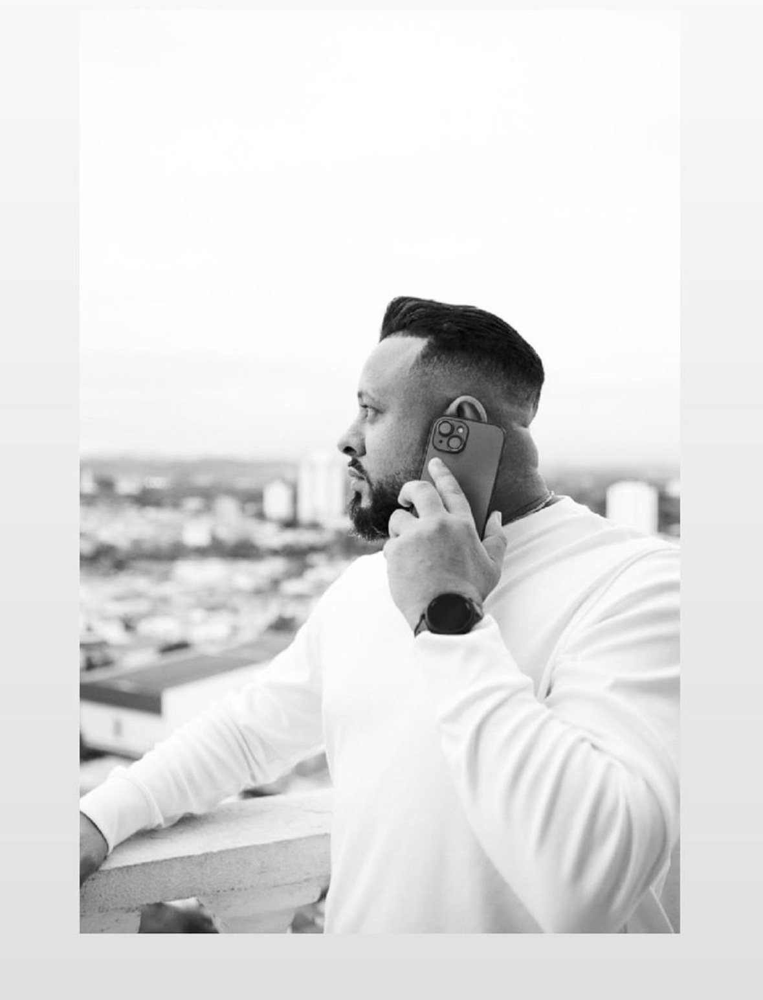

Investigar
Entender a causa antes de aplicar uma solução.
Suporte técnico & infraestrutura
Sou Anderson Souza. Atuo com suporte técnico na CL9 Tecnologias e estudo ambientes de containers e orquestração para transformar conhecimento em soluções práticas.

Minha experiência começa no suporte: entender cenários, investigar falhas e buscar respostas claras para problemas técnicos.
A DevSystem é o espaço onde registro minha evolução em infraestrutura moderna, com foco em containers, automação e orquestração.
Entender a causa antes de aplicar uma solução.
Transformar cada aprendizado em conhecimento reutilizável.
Construir repertório técnico com prática consistente.
Áreas que estou aprofundando e que farão parte dos próximos projetos da DevSystem.
Containers, imagens, volumes, redes e composição de ambientes reproduzíveis.
Serviços distribuídos, escalabilidade, balanceamento e gerenciamento de clusters.
Orquestração, workloads, serviços e fundamentos de aplicações resilientes.
Projetos desenvolvidos para transformar estudos de infraestrutura, containers e automação em soluções práticas.
Portfólio publicado em VPS Ubuntu com Docker, Nginx, Traefik, HTTPS automático, GitHub Container Registry e pipeline CI/CD pelo GitHub Actions.
Aplicação financeira desenvolvida em PHP 8.3 e MariaDB para controle de contas fixas e parceladas, favorecidos, filtros por período, dashboard, relatórios e previsões mensais.
GitHub → Actions → Registry → VPS → Traefik → PHP/Apache → MariaDB